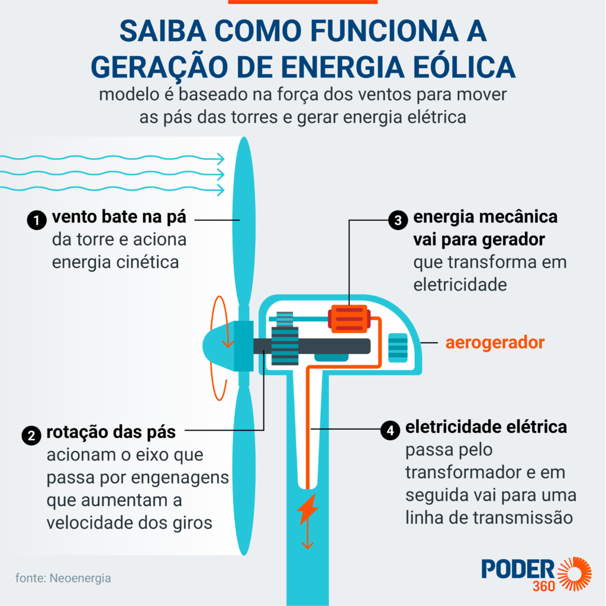
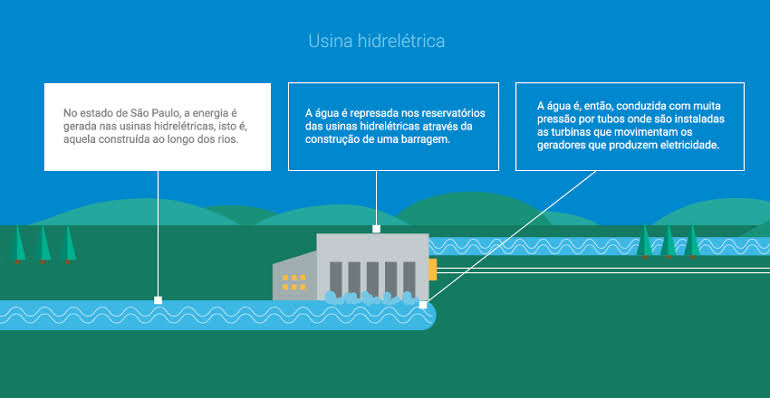

Vantagens da Energia Eólica
| Fonte de energia renovável |
| Redução das emissões de carbono |
| Área pequena de instalação |
| Baixo custo de manutenção |
| Contribuição para a economia local |
Desvantagens da Energia Eólica
| Impacto visual e sonoro |
| Dependência das condições do vento |
| Interferência na vida selvagem |
| Custo inicial de instalação |
| Problemas de localização (melhores áreas ventosas são geralmente remotas) |
Vantagens da Energia Hidrelétrica

| Fonte de energia renovável |
| Produção de energia constante |
| Controle de enchentes |
| Água utilizada para múltiplos propósitos (irrigação, navegação, etc.) |
| Longa vida útil das usinas hidrelétricas |
Desvantagens da Energia Hidrelétrica
| Impacto ambiental e social |
| Perda de habitats aquáticos |
| Alteração no fluxo dos rios |
| Custo inicial e tempo de construção elevados |
| Riscos de deslizamentos de terra e terremotos (em casos de grandes reservatórios) |